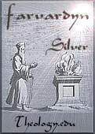

A RESPONSE TO ANTI-SEMITISM
Faculty and Staff Blogs
Jim West's Blog
Nettelhorst's Ramblings: A Blog
Quartz Hill School of Theology has published Jim West's books, Biblical Studies: A Beginners Guide to Significant Aspects of the Study of the Bible and Systematic Theology: Theology for the Person in the Pew.
The Current Issue of Quartz Hill Journal of Theology is available HERE. It is a quarterly journal of Bible and contemporary theological thought.
Past Issue of Quartz Hill Journal of Theology is available HERE.
Inner Beauty, a calendar for 2006 featuring photographs by Dandi Moyers, our Assistant Editor, is now available HERE. Featuring beautiful closeups of flowers.
A Photo From Inner Beauty
Other Stuff Of Interest
About the Church that Supports Us | Current Diatribe
Software | Areopagus | Stump the Theologians
News about Beyond the Box,
our weekly Webcast
Get mugs, t-shirts and mousepads with the Quartz Hill School of Theology logo!
Farvardyn Project is a source about religions, culture, civilization, rituals and ceremonies of the Gateway of the east, Ancient Persia. It also provides some introductory informations about holy and dead languages of the lost world of Iran. The Farvardyn site has granted us the following two awards:
